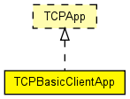

Client for a generic request-response style protocol over TCP. May be used as a rough model of HTTP or FTP users. Compatible with both IPv4 and IPv6.
The model communicates with the server in sessions. During a session, the client opens a single TCP connection to the server, sends several requests (always waiting for the complete reply to arrive before sending a new request), and closes the connection.
The server app should be TCPGenericSrvApp; the model sends GenericAppMsg messages.
Example settings:
FTP:
numRequestsPerSession = exponential(3) requestLength = truncnormal(20,5) replyLength = exponential(1000000)
Note that this module doesn't open separate TCP connections for commands and data transfer as the FTP protocol.
HTTP:
numRequestsPerSession = 1 (HTTP 1.0) numRequestsPerSession = exponential(5) (HTTP 1.1, with keepalive) requestLength = truncnormal(350,20) replyLength = exponential(2000)
Note that since most web pages contain images and may contain frames, applets etc, possibly from various servers, and browsers usually download these items in parallel to the main HTML document, this module cannot serve as a realistic web client.
Also, with HTTP 1.0 it is the server that closes the connection after sending the response, while in this model it is the client.
See also: TCPGenericSrvApp, GenericAppMsg, TelnetApp
The following diagram shows usage relationships between types. Unresolved types are missing from the diagram. Click here to see the full picture.
The following diagram shows inheritance relationships for this type. Unresolved types are missing from the diagram. Click here to see the full picture.
| Name | Type | Default value | Description |
|---|---|---|---|
| address | string | "" |
may be left empty ("") |
| port | int | -1 |
port number to listen on |
| connectAddress | string | "" |
server address (may be symbolic) |
| connectPort | int | 1000 |
port number to connect to |
| startTime | double | 1s |
time first session begins |
| numRequestsPerSession | int | 1 |
number of requests sent per session |
| requestLength | int | 200B |
length of a request |
| replyLength | int | 1MB |
length of a reply |
| thinkTime | double |
time gap between requests |
|
| idleInterval | double |
time gap between sessions |
|
| reconnectInterval | double | 30s |
if connection breaks, waits this much before trying to reconnect |
| Name | Value | Description |
|---|---|---|
| display | i=block/app |
| Name | Direction | Size | Description |
|---|---|---|---|
| tcpIn | input | ||
| tcpOut | output |
// // Client for a generic request-response style protocol over TCP. // May be used as a rough model of HTTP or FTP users. // Compatible with both IPv4 and IPv6. // // The model communicates with the server in sessions. During a session, // the client opens a single \TCP connection to the server, sends several // requests (always waiting for the complete reply to arrive before // sending a new request), and closes the connection. // // The server app should be TCPGenericSrvApp; the model sends GenericAppMsg // messages. // // Example settings: // // FTP: // <pre> // numRequestsPerSession = exponential(3) // requestLength = truncnormal(20,5) // replyLength = exponential(1000000) // </pre> // // Note that this module doesn't open separate \TCP connections for commands // and data transfer as the FTP protocol. // // HTTP: // <pre> // numRequestsPerSession = 1 <i>(HTTP 1.0)</i> // numRequestsPerSession = exponential(5) <i>(HTTP 1.1, with keepalive)</i> // requestLength = truncnormal(350,20) // replyLength = exponential(2000) // </pre> // // Note that since most web pages contain images and may contain frames, // applets etc, possibly from various servers, and browsers usually download // these items in parallel to the main HTML document, this module cannot // serve as a realistic web client. // // Also, with HTTP 1.0 it is the server that closes the connection after // sending the response, while in this model it is the client. // // @see TCPGenericSrvApp, GenericAppMsg, TelnetApp // simple TCPBasicClientApp like TCPApp { parameters: string address = default(""); // may be left empty ("") int port = default(-1); // port number to listen on string connectAddress = default(""); // server address (may be symbolic) int connectPort = default(1000); // port number to connect to double startTime @unit("s") = default(1s); // time first session begins volatile int numRequestsPerSession = default(1); // number of requests sent per session volatile int requestLength @unit(B) = default(200B); // length of a request volatile int replyLength @unit("B") = default(1MB); // length of a reply volatile double thinkTime @unit("s"); // time gap between requests volatile double idleInterval @unit(s); // time gap between sessions volatile double reconnectInterval @unit("s") = default(30s); // if connection breaks, waits this much before trying to reconnect @display("i=block/app"); gates: input tcpIn @labels(TCPCommand/up); output tcpOut @labels(TCPCommand/down); }